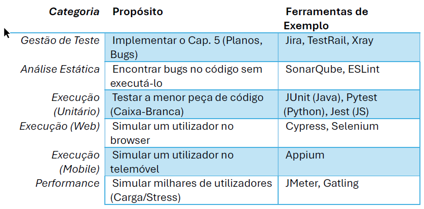

Aula 08 | CTFL Capítulos 5 & 6
Do Processo à Prática: Usando Jira, Cypress e JMeter no Mundo Real
Nas Aulas 1-4, aprendemos os Fundamentos e as Técnicas de como projetar testes.
Agora, vamos responder:
"Como gerimos todo este processo?"
e
"Como usamos ferramentas para escalar?"
Passamos da arte de testar para a engenharia de teste.
Capítulo 5
É o cérebro da operação de qualidade. É o conjunto de processos que nos leva de:
Caos
"Testem aí, vejam se quebra."
"Bugs enviados por email."
Controle
"Testes planeados com base no risco."
"Defeitos rastreados no Jira."
Gestão de Teste é o que torna a qualidade previsível e mensurável.
O Plano de Teste é o nosso mapa. Responde a perguntas cruciais:
Imagine planear os testes para uma nova funcionalidade de "Perfis de Utilizador" no Netflix.
Monitoramento: É o ato de recolher dados. "Onde estamos?"
Controle: É o ato de tomar decisões com base nos dados. "O que vamos fazer a respeito?"
Exemplo de Cenário:
Não temos tempo para testar tudo. RBT significa focar o esforço onde o impacto de uma falha é maior.
Exemplo: Aplicação Bancária
O processo de identificar, registar, classificar, priorizar e resolver defeitos. É o coração da comunicação entre QA e Devs.
O objetivo não é apenas "encontrar bugs", mas garantir que eles sejam corrigidos e que a correção não introduza novos problemas (regressão).
A ferramenta central disto é o Relatório de Defeito.
Um bom bug report é aquele que o dev consegue reproduzir em 30 segundos.
Cada estado representa uma "passagem de testemunho" entre Testadores (QA) e Desenvolvedores (Devs). Esta é a implementação prática da Gestão de Defeitos.
Pergunta: "Qual é o impacto técnico do bug no sistema?"
Foco: Funcionalidade, quebra, perda de dados, crash.
Pergunta: "Qual é a urgência de negócio para corrigir este bug?"
Foco: Receita, imagem da marca, cronograma, visibilidade.
Estes dois eixos são independentes e não devem ser confundidos!
O "Bug do Logo"
Bug: O logo da empresa está com a cor errada na página inicial.
Análise: O sistema funciona perfeitamente (Baixa Severidade), mas é um desastre de branding e o CEO quer corrigido ontem (Alta Prioridade).
O "Bug da Meia-Noite"
Bug: Se um admin e um user clicarem em "Salvar" ao mesmo tempo, num ano bissexto, a base de dados corrompe.
Análise: Corrupção de dados é (Alta Severidade), mas o cenário é raríssimo e afeta 0.01% dos casos (Baixa Prioridade).
Capítulo 6
Porque humanos são lentos, caros e inconsistentes em tarefas repetitivas.
Ferramentas de teste ajudam a:
Nenhuma ferramenta faz tudo. Precisamos de uma "caixa de ferramentas".
As ferramentas apoiam todo o ciclo de vida, desde o Planejamento até à execução.
Implementam o Capítulo 5 (Gestão).
Função: Permitem ligar o Requisito (User Story) ao Caso de Teste (Plano) e ao Defeito (Bug). Criam rastreabilidade.
Estas ferramentas "leem" o código-fonte sem executá-lo.
O SonarQube é como um "revisor de código" automatizado que encontra:
Isto é "Shift-Left": encontrar bugs antes mesmo do QA começar.
// O Dev escreve este código function calcularDesconto(preco, ehVip) { var desconto = 0; // SonarQube: "Use 'let' ou 'const', não 'var'." (Code Smell) if (ehVip = true) { // SonarQube: "BUG! Isto é uma atribuição, não uma comparação." desconto = preco * 0.1; } if (preco > 100) { desconto = preco * 0.05; // SonarQube: "Este 'if' sobrescreve o desconto 'Vip'." (Bug Lógico) } return desconto; }
Focados em testar a menor peça de código (uma função, um método). São testes de Caixa-Branca, escritos por Devs.
Simulam um utilizador real no browser. São testes de Caixa-Preta automatizados.
O "Padrão Industrial". Robusto, suporta todas as linguagens (Java, Python, C#), mas pode ser lento e complexo.
O "Moderno". Rápido, fácil de usar, focado em JavaScript, excelente para Devs e QAs modernos.
Este script automatiza o teste do "Caminho Feliz" de um login num site de e-commerce.
// Teste: "Deve permitir o login de um utilizador válido" it('allows a valid user to log in', () => { // 1. Visita a página de login cy.visit('https://loja-exemplo.com/login'); // 2. Preenche os campos cy.get('#email').type('cliente@teste.com'); cy.get('#password').type('senha123'); // 3. Clica no botão de entrar cy.get('.btn-login').click(); // 4. Verifica o resultado esperado cy.url().should('include', '/minha-conta'); cy.get('.welcome-message').should('contain', 'Olá, Cliente'); });
Usado para automatizar testes em aplicações nativas (iOS e Android).
Exemplo Real: Testar o Instagram
O Appium permite que um único script de teste execute a mesma ação (Ex: "Fazer upload de uma foto") em múltiplos dispositivos:
Isto é crucial para o Teste de Compatibilidade.
Usadas para testar o desempenho e a carga do sistema. Simulam cenários impossíveis de testar manualmente.
Exemplo Real: A Black Friday num E-Commerce
Pergunta: "O nosso site (Ex: Amazon) aguenta 50.000 utilizadores a adicionar produtos ao carrinho ao mesmo tempo?"
O JMeter simula esses 50.000 "utilizadores virtuais" e mede:
Implementar ferramentas não é uma "bala de prata".
É o maior inimigo da automação. É um teste que passa 9 vezes e falha 1, sem qualquer mudança no código.
Causas Comuns:
Testes frágeis destroem a confiança na suite de automação. A equipa começa a ignorar as falhas.
(Comprar uma ferramenta de automação cara para resolver um problema de processo).
A automação de um processo caótico apenas gera um caos mais rápido.
Uma das melhores formas de começar a automação é com a Análise Estática.
Implementação (Ex: Slack ou Trello):
Isto implementa a prevenção de defeitos de forma automática.
Com tantas ferramentas, o papel do QA mudou:
Focado em execução manual de casos de teste no final do ciclo.
Focado em prevenção, automação e estratégia. Sabe programar (Ex: Python, JS) e entende de ferramentas.
As ferramentas não substituem os testadores; elas capacitam os testadores a focar em problemas mais complexos.
✅ Gestão de Teste (Cap. 5) é o processo que organiza o caos. É o nosso mapa e bússola (Plano, Risco, Bugs).
✅ Ferramentas (Cap. 6) são os músculos que escalam o processo. Elas dão-nos velocidade, repetibilidade e poder (Jira, Cypress, JMeter).
✅ Não automatize o caos. O sucesso está em usar as ferramentas certas para apoiar um processo de gestão bem definido.
✅ Em software real (bancos, e-commerce, redes sociais), a qualidade é uma engenharia que combina Processo + Ferramentas + Pessoas.
Obrigada!